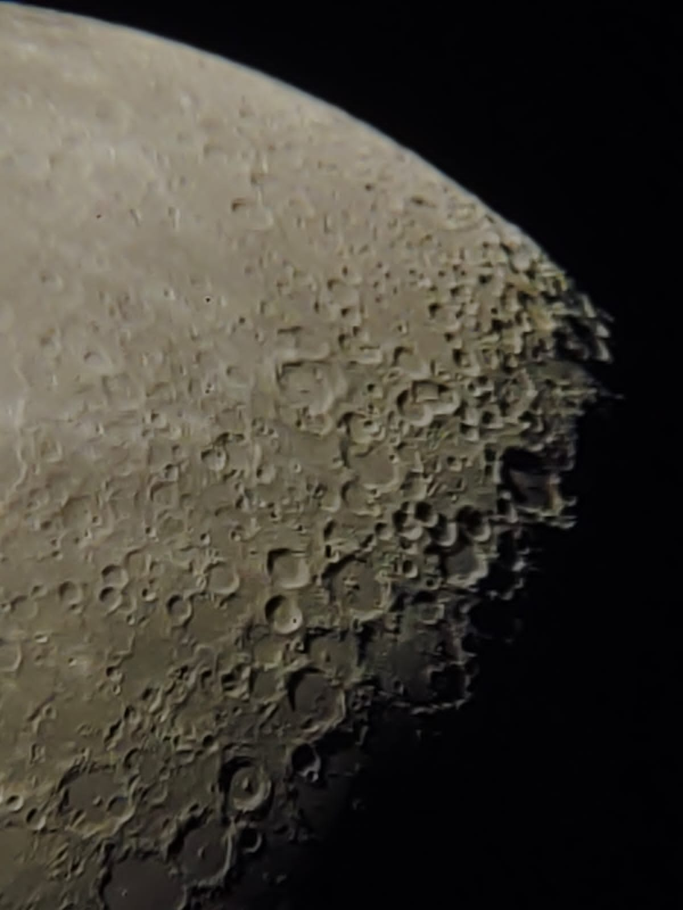

Prakhar - Research In Astrophysics
Hello there, this is Prakhar, a third-year undergrad in the elec dept. And just like many other elec people, my interns and interests have nothing to do with my department. So if not elec, then what? It's Cosmology and Astrophysics. I am also into stand-up comedy (huge shoutout to comedy cons). Most of the times, when I am not blabbing about cosmology, you can find me cracking jokes on academia.
The Early Epoch
Two years ago, when I joined the Electrical Engineering Programme, I had not yet recognised my latent interest in Astrophysics. Thinking about the deepest mysteries of the Universe, coming up with a mathematical and physical explanation of the simple phenomena happening around us and making predictions about some phenomena occurring millions of light years away. These are a few things that I love most about Astrophysics.Back in my first year, I talked to many seniors regarding possible research and project opportunities in astrophysics. I was fortunate enough to get connected to such helpful seniors. One of the seniors suggested I apply for the NIUS Programme (https://nius.hbcse.tifr.res.in/) conducted by TIFR
It is a programme specifically for first-year college students and consists of 4 phases. Phase 1 consists of a 15-day camp at TIFR where many leading scientists from all over the country deliver lectures on their research topic. Some professors also offer projects and selection for these projects is based on a test at the end of the camp. Once you get a project with a professor, the subsequent phases of the programme involve a visit to prof's university during vacations (summer and winter) for the project.
No prizes for guessing; just like everything else the camp was conducted online for our batch. Still, the camp was a great learning experience for me as it was the first time I attended lectures from such distinct domains of physics. The camp got over, and the selection test was conducted on 9th January 2022. The results were to be declared in April.
The Foreign Fascination
By the end of my first-year summer, I had already started working on a cosmology project with Prof Vikram Rentala in Physics Department. Now the thing with any theory-heavy topics is that they require a lot of readings to prepare the background before you can contribute to any meaningful "research". So I spent my whole third semester studying General Relativity (GR) and then started reading Cosmology in my fourth sem. I enjoyed these readings so much that I wanted to go for one more cosmology project to explore the field in greater depth.My love for cosmology and the FOMO from cse friends going abroad for an internship compelled me to try my luck. Rather than waiting three months for NIUS results, applying for other programmes and writing to other professors looked like a safer option.
Here's an important heads-up for the readers about apping. Before you start writing to any prof, just lower your expectations (a lot)! Especially when you are looking for opportunities in areas like cosmology/theoretical physics where funding is already meagre, profs are not willing to offer projects. I spent the whole of January, February and March preparing emails and SOPs for programmes, stalking professors, reading about their research and sending around 20-25 emails. I am not very fond of the idea of "cold-mailing"; hence I didn't shoot 100s of emails all at once.
By the end of March, I was pretty disappointed with this whole apping process, but I still managed to send a few emails every week. One night while scrolling through the Damp EP website and reading similar blogs, I came across a blog from a senior, Sanket Doshi, who visited Kansas State University for a cosmology project under Prof Bharat Ratra. I liked the project and prof's profile, so I mailed him that night. He agreed to offer a project but didn't have the funds to support an intern. I was a bit disheartened, but even a remote project with such a senior prof and in an area of interest didn't seem to be that bad an idea. And this is how I bagged my first remote summer intern.
On 28th April, just before our GR endsem, NIUS results came out, and I got selected for my first preference project. The project was on Extragalactic Astronomy (an area about which I had minimal idea). The project was offered by Prof Yogesh Wadadekar, who works at National Centre for Radio Astrophysics (NCRA- TIFR). Initially, I was a bit sceptical about accepting the project offer but spending a summer at an Astrophysics Research Institute and exploring a new domain sounds adventurous. So I decided to visit NCRA in the summers while continuing the project with Prof Ratra remotely.
The Expedition
The project with Prof Ratra started in March itself. He first suggested I get familiar with simulating cosmological quantities in python. It was a totally new experience for me as my previous encounter with cosmology was limited to theory only. I enjoyed the task very much. And I feel my coding skills have improved at least 100 folds. For an area like cosmology which heavily relies on data, programming skills are absolutely essential even when planning to do theory because you will have to do some simulations at the end of the day.After getting familiar with these basic coding skills, Prof Ratra asked to reproduce the results of a paper of one of his PhD students. The results were constraints on dark energy models obtained using Hubble's Constant data at various redshifts (0-3). Prof Ratra also handed me a thesis of one of his PhD students, which was a handy resource for understanding these dark energy models. These results are produced using a standard simulation technique known as Markov Chain Monte Caro (MCMC) simulations. MCMC is widely used in academia in many areas of research. It took me a few days to get comfortable using MCMC. Then I extended my analysis to complex datasets like BAO (Baryon Acoustic Oscillations) and Supernova Ia data.
Doing a remote project comes with its own set of problems. And for me, one of the significant difficulties was the lack of timely guidance whenever I got stuck. Even though Prof Ratra was helpful enough to connect me to some of his PhD students, communicating the technical problems through emails is still annoying. Some days you just feel lost and run out of ideas to try, but that's how it works in academia in general, and for me, things eventually turned out fine. My second internship at NCRA started on 2nd June. And unlike Prof Ratra's Project, this project was quite chill. Prof Wadadekar works on galaxies, and for the summer phase of the project, he asked me to read Peter Schneider's Extragalactic Astronomy Book to understand the background of the field. He used to meet us twice or thrice a week to discuss our doubts. By the first week of July, I was done with Schneider and then started reading some papers related to the MaNGA ( no, it's not what you are thinking) survey. Later as JWST (James Webb Space Telescope) data was released, we shifted our dataset to JWST CEERS data. As I'm writing this blog, we are looking at the light from very high redshift galaxies (z ~ 10) when the Universe was just 500 million years old (If "just" seems weird, lemme remind you the age of the Universe is ~ 13.8 billion years). It is so exciting for the whole community because this is the first time we have had information from such an early period of the Universe.
My stay at NCRA has been one of the best experiences of my life. It's a small institute in Pune with 30-35 PG students, so unlike IIT, it's quite a peaceful environment here. I hung out with PhDs a lot, and it gave me a nice perspective of the kind of life that can be expected during a PhD. NCRA has a 10 inch diameter telescope which works best for an unplanned star-gazing session. Here are a few pictures (Moon, Orion Nebula and Pleiades Constellation) we managed to take using the telescope and our phone’s camera (Credits - Yash Bhusare)
Apart from the project, we had weekly lectures and review talks where Professors and PhD students discussed their research. We also visited GMRT (Giant Meter wave Radio Telescope) which is world’s biggest Radio Telescope Observatory. Its an array of 30 telescopes, each with a 45m diameter. Here is a picture of our group with a radio dish in the background.
The Conclusion
Having spent so much time working on problems actually of concern to academics, I am pretty sure than ever that I want to pursue a PhD in Physics. I am still not very sure of my interests. I liked the galaxies project but realised it involves too much analysis and observation kind of things which I don't want to take up as a long-term career. The cosmology project made me realise it is fun doing simulations and I definitely see myself doing it as a part of some project in future. Quite recently, I have become more interested in theoretical high-energy physics and plan to explore it more in my 6th and 7th semester.Okay, so that was my long (I hope not so boring) story of how I spent my second-year summer. If you've made it till here, then I will share my two cents for a young reader trying to explore Astrophysics or academia in general. Feel free to try new things in your initial years at college. Don't let your branch or grades or anyone else let discourage you from pursuing the things that you love doing. People generally have very little idea of what research is all about. Talk to a lot of seniors who have tried similar things before. Their experience helps a lot. Through this blog, I have tried to communicate most of the things I felt anyone looking for a summer opportunities in this area would be interested in. Still, if you have any further queries, do hit me up: 9460228213
All the very best!